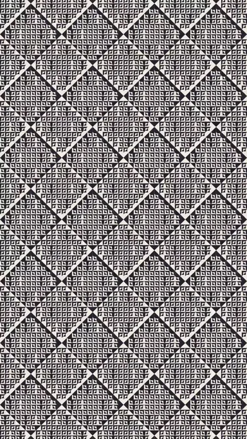
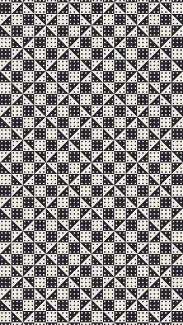
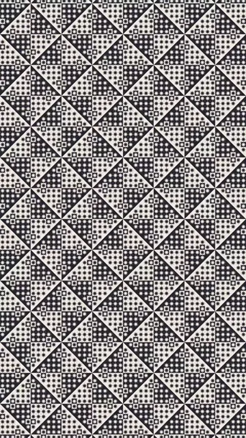

Gruppo 1 di 6
Tinta unita e bande uguali

Altre lingue: Français · English · Español · ไทย · 简体中文 · Русский · Português · हिन्दी · Deutsch · 日本語
Una ricetta fissa per collezione
Ogni collezione di fondi ha la sua animazione: una sequenza fissa di motivi del corpus, ciascuno il più vicino al precedente, in dissolvenza incrociata. La stessa collezione dà sempre la stessa animazione. Le 34 animazioni sono ordinate in sei gruppi, e ogni gruppo ne mostra qui una, il suo campione. Nulla viene caricato prima di un clic, e si riproduce una sola animazione alla volta. Per comporre con il suono, a schermo intero: la pagina Sfondi (in francese).
Gruppo 1 di 6
Gruppo 2 di 6

Gruppo 3 di 6

Gruppo 4 di 6

Gruppo 5 di 6

Gruppo 6 di 6

B3x disegna esattamente lo stesso di BA33: non ha un'animazione propria.